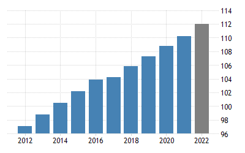

Main Menu
Main Menu Current Date and Time :
HISTORY
The Philippines takes its name from Philip II, who was king of Spain during the Spanish colonization of the islands in the 16th century. Because it was under Spanish rule for 333 years and under U.S. tutelage for a further 48 years, the Philippines has many cultural affinities with the West.
source:https://www.britannica.com/place/Philippines
GEOGRAPHY
Philippines, island country of Southeast Asia in the western Pacific Ocean. It is an archipelago consisting of more than 7,000 islands and islets lying about 500 miles (800 km) off the coast of Vietnam. Manila is the capital, but nearby Quezon City is the country’s most-populous city. Both are part of the National Capital Region (Metro Manila), located on Luzon, the largest island. The second largest island of the Philippines is Mindanao, in the southeast.
source:https://www.britannica.com/place/Philippines
DEMOGRAPHICS
The current population of the Philippines is 113,114,270 as of Tuesday, December 6, 2022, based on Worldometer elaboration of the latest United Nations data. the Philippines 2020 population is estimated at 109,581,078 people at mid year according to UN data
This number continues to grow as Filipinos produce more and more babies despite the poverty.
source:https://www.worldometers.info/world-population/philippines-population/#:~:text=The%20current%20population%20of%20the,year%20according%20to%20UN%20data.
CULTURE
The culture of the Philippines comprises a blend of traditional Filipino and Spanish Catholic traditions, with influences from America and other parts of Asia. The Filipinos are family oriented and often religious with an appreciation for art, fashion, music and food.
Filipinos are known all around the world as one of, if not, the most hospitable and welcoming people.
source:https://www.iexplore.com/articles/travel-guides/south-and-southeast-asia/philippines/history-and-culture#:~:text=The%20culture%20of%20the%20Philippines,%2C%20fashion%2C%20music%20and%20food.
Copyright © 2022. All rights reserved
About the Philippines
Tourist Attractions
Contact Us
Log In